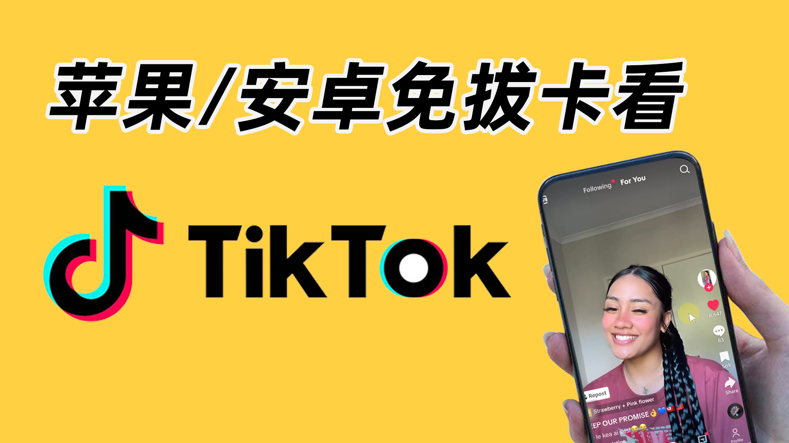
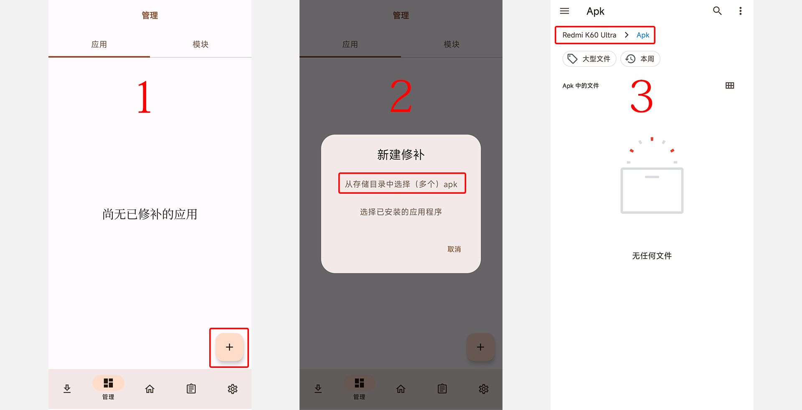
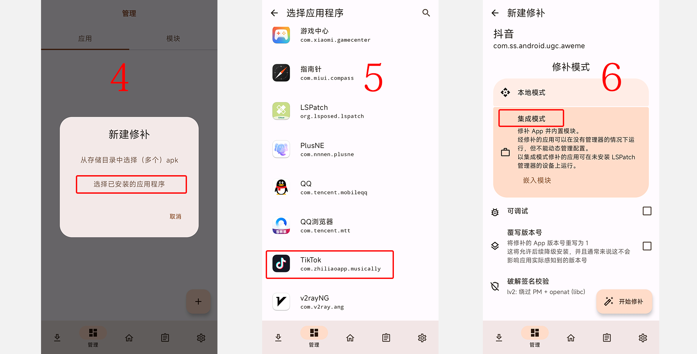
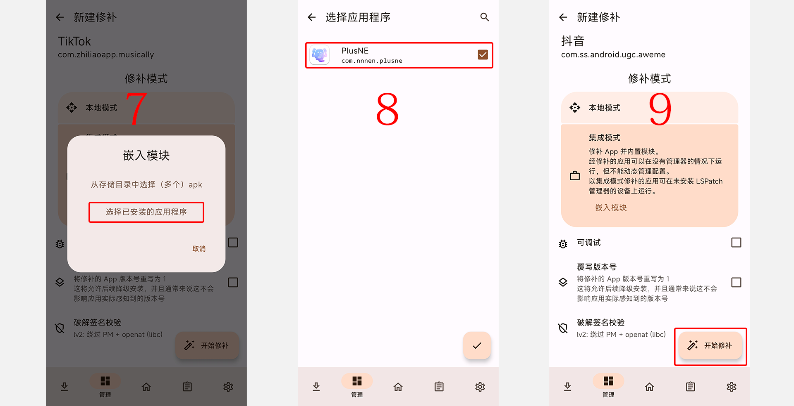
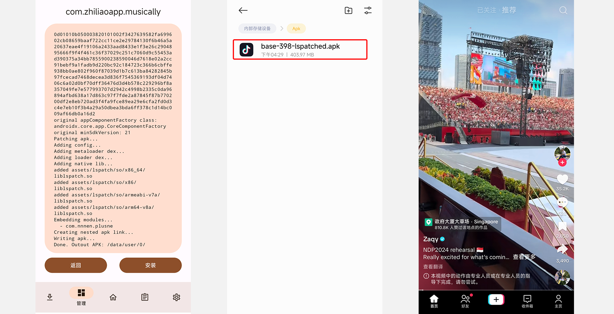

YouTube 视频教程：https://youtube.com/playlist
无论你是普通用户还是 TikTok 运营者，想要在国内使用这款海外版的抖音，可能会遇到一些限制。由于众所周知的原因，我们国内用户无法直接访问 TikTok 客户端。即便在科学上网环境中，仍然会受到 SIM 卡归属地的限制。具体表现为为黑屏、没有网络、刷不出任何视频。但不要担心，本文将介绍如何绕过地区限制、SIM 卡限制的方法，帮助你查看指定国家的 Tiktok 数据。你可以在下列方法中选择适合自己的方式。
方法1：使用网页版 TikTok
首先，最简单的方法是使用浏览器打开TikTok官网：tiktok.com，进入网页版 TikTok。
这样你可以正常浏览视频、登录账号，并进行基本操作，如点赞和评论。TikTok 的网页版功能有限，评论，点赞都是可以的。但是其他体验略显不佳，不能快进，也不会预加载，每个视频开头都要缓冲一下。如果你的科学上网工具不给力的话还会时常的卡顿。但对于偶尔想要了解异域风情的用户来说，是一个不错的选择。
方法2：不插 SIM 卡使用
首先，准备一台不插 SIM 卡的手机，然后在Play商店下载 TikTok APP。
1、IOS苹果手机用户需要去外区的 APP Store 搜索 TikTok 下载。
购买苹果 ID / GV号 / 礼品卡 点此进入>>
目前，苹果手机已经不检测 SIM 卡的归属地，亲测苹果手机免拔卡也可使用 TikTok 了。
2、安卓手机用户可以去 Google Play 或者是 PureAPK 下载安装包使用。
然后，重新打开科学上网工具，选择对应地区的节点，然后再打开 TikTok，多刷新几次（多下拉几次）就可以使用了。这个模式适合外贸电商、海外社交媒体运营者使用。只需要购买一个备用机就可以。
注意：将SIM卡拔出后，需要清理后台（就是清除 TikTok 的运行，类似电脑重启的原理），即可实现不插卡使用。如果你拔卡之后，访问 TikTok 依然是黑屏，就说明你的 sys_region 被识别是 CN（中国），你需要同步修改下手机的地区设置，重启后再使用海外 TikTok。
顾名思义，免拔卡模式是指在不拔出 SIM 卡的情况下使用TikTok。
1、下载 TikTok 破解版
网上有很多 TikTok 破解版，可通过下面地址直接下载 TikTok APP ，打开科学上网工具即可使用。
TikTok 下载地址1：https://jiesuo.tk/andriod/
TikTok下载地址2： https://pan.lanzoui.com/b0f199a5a
TikTok下载地址3： http://www.123pan.com/s/b6cA-534pA
这些破解版都是网上搜集的，用得人也还挺多的，但是它没有在应用商店发行，我们在使用的时候注意风险以及隐私数据的泄露问题。
2、使用废卡、或者流量卡
如果你是双卡机器（就是两个 SIM 卡）那么你可以去淘宝买个海外的废卡（或者是那种旅游流量卡）。例如日本的废卡、或者美国的废卡，这样就不要反复插拔 SIM 进行使用了。但是坏处是，你的目标地区会有限制（毕竟会用到一个卡槽），例如日本流量卡可能只能刷到日本地区的。如果你是运营一个地区的TikTok账号则可以采取这种方式。
方法4：制作修改版 TikTok
目前，苹果机器不持支这种方式（苹果的APP应用证书非常的麻烦，不能使用自签名模式）。安卓用户强力推荐这种模式。通过 LSPatch 和 PlusNE 软件将 TikTok 程序进行修改，将发送的数据包改成可以目标数据进行发送。可以自行制作修改版 TikTok，并分享给其他用户使用。
下载地址：
Tiktok下载：https://apkpure.net/cn
LSPatch：https://github.com/LSPosed/LSPatch/releases
PlusNE：https://github.com/Xposed-Modules-Repo/com.nnnen.plusne/releases

1、打开 LSPath，进入管理界面（底部菜单），点击右下角的（+）加号。
2、
随便选择一个目录用来存放被修改的 TikTok APK 文件。

3、选择需要被修改的应用，此处应该是 TikTok。【补充说明：如果要解锁其他应用，也是同样的道理。】
4、修补模式选择集成模式。

5、点击嵌入模块，选择已安装 的应用程序，这里勾选 PlusNE ，就是在正版的 TikTok 中直接嵌入写好的模块。
6、点击开始修补。

7、这里需要等待 2-3 分钟。当出现【安装】按钮时，代表修改完成。
8、这里需要注意的是，你不需要点击安装。而是需要打开文件管理器（一般安卓都有），找到之前【步骤1】中自己选择保存的文件夹。
手动打开、并安装修改好的 TikTok APK 文件。
如果你有其他的小伙伴也需要这个无限制的TikTok，可以发送给其他人进行安装使用。
注意：点击安装的时候需要删除之前的 TikTok，安装成当前修改后的版本（自签名版本）
总结：
以上就是四种绕过地区限制使用 TikTok 的方法。每种方法都有其优缺点，你可以根据自己的需求和情况选择适合自己的方式。我也帮大家简单的总结了四种方式的特点：
方法1-网页模式：适合希望体验世界各国风情、拓宽眼界的用户。
方法2-拔卡模式：这个模式适合外贸电商、海外社交媒体运营者使用。
方法3-免拔卡模式：如果是运营一个地区的TikTok账号则可以使用废卡、或者流量卡的方式。网上分享的破解版只适合娱乐。
方法4-修改模式：安卓机强力推荐这种方式，个人，运营都可以使用这种模式
1、有很多网友下载tiktok翻墙也不能看，这里最主要的原因可能你的真实IP地址被TikTok平台发现了! 所以我们需要找一个安全稳定的tiktok专用VPN。
2、另外翻墙工具代理规则没有设置好。
3、最后，因为抖音国际版TikTok禁止了中国香港用户使用，所以你若身处中国香港，或者选的是香港节点，也会出现用不了的情况，这里切换一下节点就可以了。
无论你是苹果手机，还是安卓手机，当你在设置手机系统语言和时间时，请考虑清楚，你到底是想重点观看哪里的视频。比如你把手机语言设置成英语，那么TikTok会向你推荐英文视频，如果你把手机语言设置成中文繁体，那么TikTok可能会重点向你推荐中文繁体内容的视频。